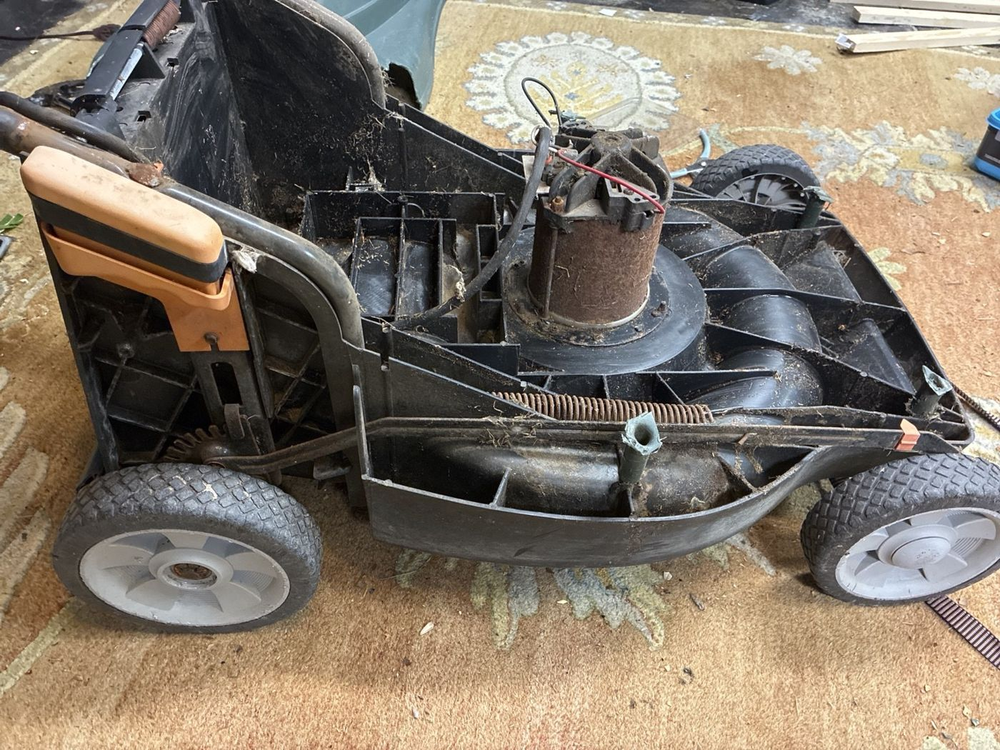
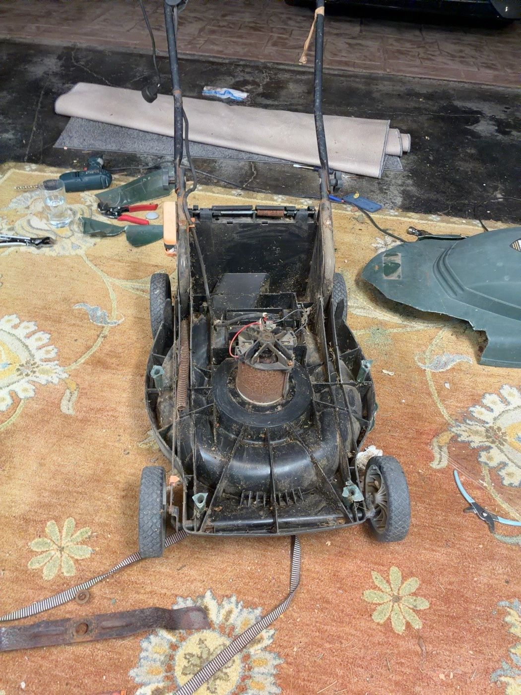
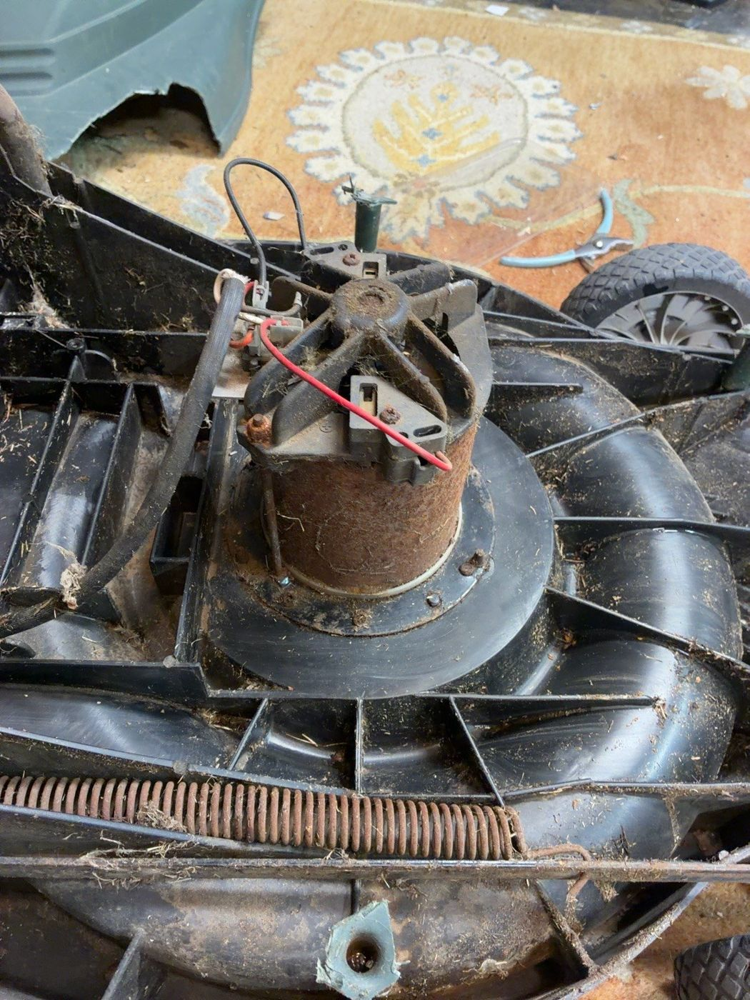
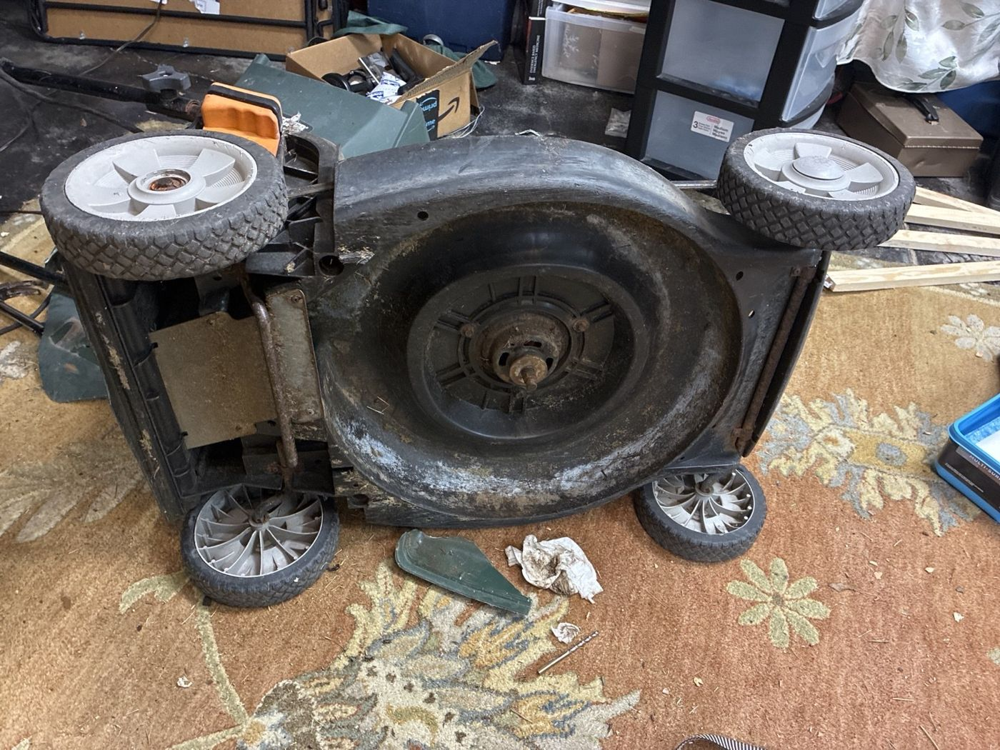
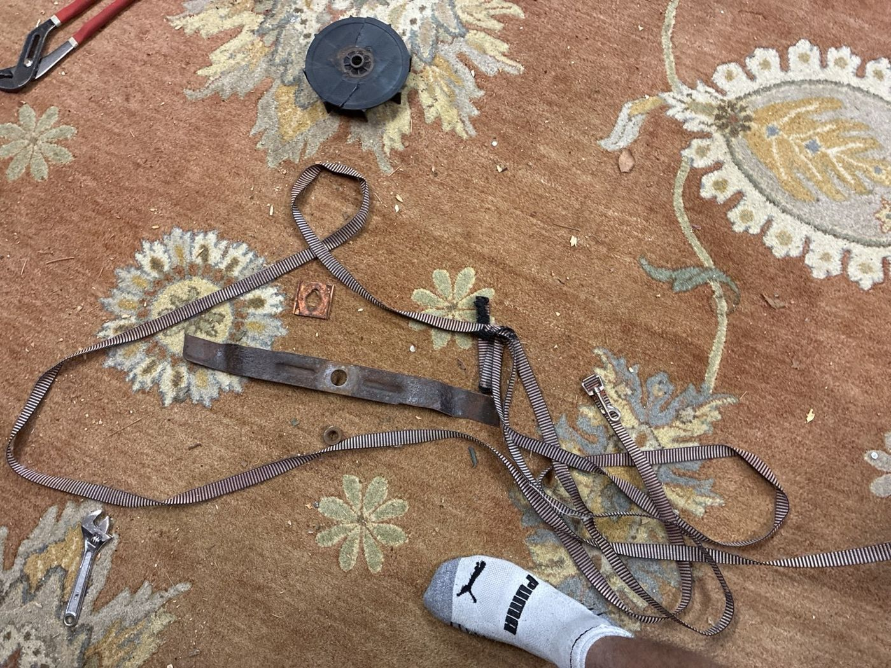

Independent project · Mobile robotics
Lawn Mower Retrofit
Evaluating a conventional mower conversion through drive sizing, sensor selection, and navigation architecture.
- Role
- Mechanical design, prototyping & system planning
- Context / status
- In progress · Independent garage project
- Tools & methods
- CAD · FDM printing · Gearbox design · Drive sizing · Controls planning

01
Overview
In progress
I work on the physical build when I’m back home in my garage. Teardown and printed gearbox parts are underway; powered driving, mowing tests, and autonomous navigation are still development goals. I’ll update this page as the hardware progresses.
This project started with a question: what would it take to turn a conventional push mower into a remotely driven machine? I began with a feasibility study, then took apart the mower to understand the space available for a drivetrain and controls. The immediate goal is a controllable mobile platform; autonomy is a longer-term extension.
The retrofit brings together the work I enjoy most: inspecting existing hardware, working through a mechanism in CAD, making parts, and using the next prototype to answer a more specific question. Building around an existing mower also means dealing with real constraints—wheel locations, ground clearance, access, and a blade motor that already occupies the middle of the chassis.

02
My contribution
I developed the initial research and system plan, started disassembling the mower, and began making parts for custom gearboxes with my Bambu Lab 3D printer. The work has moved beyond a paper concept into physical prototyping, while the complete drive and control system remains in development.
Garage development
Hardware progress happens in sessions at home, so I’m approaching the project in manageable pieces: inspect the mower, work through the drivetrain layout, print parts, and return to the assembly to check what fits. It is an ongoing personal build, with room to revise the approach as the physical constraints become clearer.
03
Design & development
Teardown and retrofit constraints
Removing the housing exposed the central AC blade motor and the surrounding chassis. That helped separate two different engineering tasks: adding propulsion at the wheels and deciding how to power and control the existing cutting system. The wheel drive can be developed on its own before integrating mowing.


The layout has to account for wheel loading, changes to the mower’s balance, access for assembly, and hardware that may be replaced during testing. A mount that looks compact in CAD still needs room for fasteners, tools, wiring, and removal.
Wheel torque and gear reduction
My feasibility study explored independently driving the rear wheels so that differences in left and right speed could steer the mower. That remains the candidate drivetrain. Turning resistance, traction, and the behavior of the existing front wheels still need physical evaluation.
I estimated drive requirements from mower mass, wheel radius, and resistance on grass. The paper used an initial target of roughly 7–10 N·m per driven wheel with a design margin. This is a sizing estimate to revisit with measurements, rather than a measured output or proof that the mower can handle every surface.
Drive sizing relationships
GROUND LOAD TO WHEEL TORQUE
F ≈ Crrmg cos α + mg sin α + ma
Twheel ≈ Fr / 2
The simplified force estimate includes rolling resistance, slope, and acceleration. It assumes two driven wheels sharing the load equally; grass conditions, turning scrub, traction limits, and uneven loading need separate checks. Here m is mass, r is wheel radius, α is slope, and Crr is rolling-resistance coefficient.
REDUCTION AND SPEED
Tout ≈ ηG Tmotor · ωout = ωmotor / G
A reduction ratio G trades output speed for torque, with efficiency η accounting for losses. Wheel speed follows v = rω. The useful choice depends on motor performance under load, current draw, packaging, and the desired driving speed.
These are preliminary sizing models. No final gearbox ratio, motor selection, or drive performance is claimed here.
Custom gearboxes and printed parts
I’ve started making parts for custom gearboxes on my Bambu Lab printer. The purpose of the early prints is to make the drivetrain layout tangible: check how components locate, how the assembly goes together, and where the geometry needs to change before committing to a more durable build.
The CAD-to-print workflow is part of the engineering work. I use the printer to produce functional prototypes, considering part orientation, support needs, wall structure, clearances, and how the part will be loaded. Printing a part is one step; checking its fit and revising the model is what makes the next version useful.
Gearbox design questions I’m working through
- Ratio and layout: how much reduction fits near the wheel without sacrificing ground clearance?
- Load path: how should the wheel axle be supported so wheel loads do not rely on a motor shaft alone?
- Fit and alignment: how will printed tolerances affect bearing seats, shaft spacing, and gear engagement?
- Assembly: can the housing be opened, aligned, and fastened without making every adjustment a teardown?
- Durability: which parts are useful as fit-check prints, and which need stronger materials or purchased hardware before loaded testing?
These are current design considerations. Printed components have not yet been qualified for sustained lawn loads.

Teleoperation before autonomous navigation
The first control milestone is deliberate, low-speed driving under direct command. My proposed architecture separates higher-level commands from low-level motor control: a single-board computer could handle the operator interface and later navigation, while a microcontroller manages wheel commands and feedback.
01Drive prototypeCheck gearbox fit and wheel motion with the cutting system disabled.
02TeleoperationDevelop commanded movement, steering response, and predictable stopping.
03Navigation studyEvaluate localization and obstacle sensing once the drive platform is repeatable.
The research considered wheel encoders, an IMU, RTK positioning, and camera or range sensing as possible inputs for later navigation. Those remain options to evaluate, not installed capabilities. Starting with teleoperation gives the mechanical and electrical systems a concrete test before adding more software.
Power and stopping behavior
The original blade uses an AC motor, while the proposed wheel motors and controls would use DC power. That leaves an important architecture decision open: retain a corded cutting system or develop a suitable onboard power arrangement. A battery for the drive system alone would not resolve the blade’s power requirements.
The planned controls need separate enable logic for driving and cutting, a stop on lost commands, and an independent hardware means of removing motor power. Early motion tests will keep cutting disabled. These functions are requirements for the build, with implementation and verification still ahead.
Design exploration: a modular drive assembly
One direction I’m exploring is a removable drive module that brings the motor, reduction, axle support, and mounting interface together. In that version, the module could be developed on the bench, checked against the mower, and revised without rebuilding the whole platform. The tradeoff is added structure and alignment requirements—so it is a concept to compare, not a settled design.
04
Progress & next steps
Completed so far: the initial feasibility study, early mower teardown, drivetrain planning, and the start of printed gearbox parts. Together, those steps have moved the project toward a physical retrofit and made the remaining design questions more specific.
Next I’m working toward a fitted drive assembly, unloaded gearbox checks, and controlled teleoperation tests. Loaded driving, integrated mowing, and autonomous operation remain future milestones. I’ll continue documenting the build as I get time in the garage.